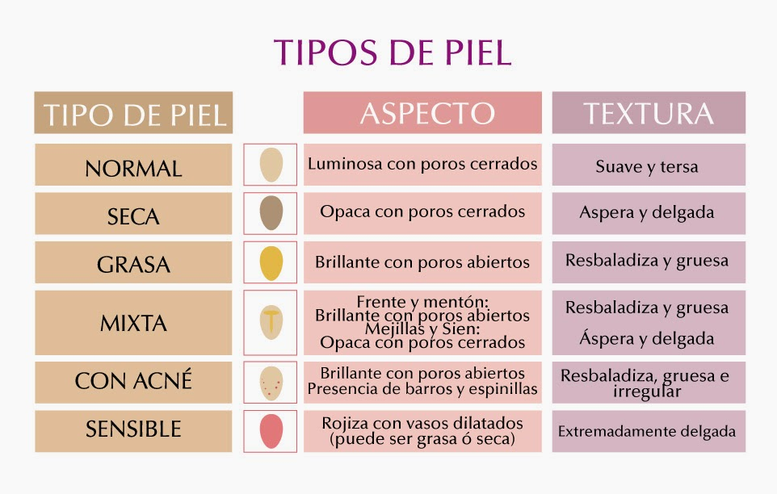

La limpieza facial sirve para eliminar el maquillaje y la suciedad, mejorar el aspecto de un rostro cansado y preparar la piel para recibir los productos de belleza.
Beneficios
Elimina impurezas
Evita el acne
Adios a las celulas muertas
Hidrata
Retarda el envejecimiento
Atrasa la aparicion de arugas
TIPOS DE PIEL
Para poder cuidar tu piel correctamente, es fundamental saber de qué tipo es. Y determinarlo no siempre es fácil, ya que cada piel es un mundo y, además, va cambiando con el tiempo.

PIEL MIXTA: La piel mixta se denomina así porque es una combinación de dos tipos de piel: normal-seca y grasa o con impurezas. La piel mixta presenta un aspecto brillante y tiende a desarrollar pequeñas impurezas, sobre todo en la llamada zona T (frente, nariz y barbilla). En cambio, la piel de la zona de las mejillas es entre normal y seca. Para estimular la restitución del equilibrio hídrico natural de tu piel, utiliza siempre un producto creado expresamente para tu tipo de piel.
PIEL SECA: La piel seca carece de hidratación y lípidos (grasa). Como consecuencia, es menos elástica, más tirante y, en muchas ocasiones, tiende a picar. Es susceptible a los factores ambientales externos y suele reaccionar irritándose. Si utilizas cremas para piel seca, podrás restituir su hidratación y fortalecer las barreras de protección natural de la piel.
PIEL NORMAL: Elástica y suave, con poros pequeños y tono rosado: si eso es lo que ves cuando te miras al espejo, es que tienes la piel normal. Incluso si de vez en cuando cometes algún que otro pecado en tu ritual de cuidado, no le causarás grandes daños. Pero para mantener su aspecto saludable, también las pieles normales necesitan hidratación y protección.
PIEL GRASA: La piel grasa tiende a producir más sebo del necesario. Las causas son la predisposición genética, el estrés y las fluctuaciones hormonales. El resultado es la aparición de granos y espinillas.
PIEL SENSIBLE: La piel sensible es más susceptible a factores externos como el estrés, el aire reseco de la calefacción o la luz UV. Si la piel pierde su equilibrio, comenzarás a sentirla tirante, te picará y se enrojecerá.
CUIDADOS DE LA PIEL
El cuidado de la piel es una parte importante de su rutina diaria. Es fundamental que mantengas tu piel bien cuidada, con una correcta limpieza y desmaquillado de los productos que la tocan, como las brochas que utilizas para maquillarte, el cepillo que usas para exfoliarte o la toalla con la que te secas. Recuerda siempre limpiarla muy bien antes de acostarte para que no acumule suciedad que luego genere más grasa innecesaria.
Protégete del sol:
Una de las formas más importantes para cuidar la piel es protegerla del sol. Una vida de exposición al sol puede provocar arrugas, manchas de la edad y otros problemas de la piel, así como un aumento del riesgo de cáncer de piel.
Para obtener la protección solar más completa:
Usa protector solar. Utiliza un protector solar de amplio espectro que tenga un factor de protección solar de, al menos, 15. Colócate abundante cantidad de protector solar, y vuelve a aplicarlo cada dos horas o con más frecuencia si estás nadando o transpirando.Busca lugares con sombra. Evita el sol entre las 10 de la mañana y las 4 de la tarde, cuando los rayos solares son más intensos.Usa ropa de protección. Protégete la piel con prendas de tejidos ajustados y mangas largas, pantalones largos y sombreros de ala ancha. También ten en cuenta los productos para lavandería que pueden proporcionarle a la ropa una capa adicional de protección ultravioleta durante una cantidad determinada de lavados, o prendas especiales para protegerte del sol, que están especialmente diseñadas para bloquear los rayos ultravioletas.
Lleva una dieta saludable
Una dieta saludable puede ayudarte a verte y sentirte mejor. Come muchas frutas, verduras, granos integrales y proteínas magras. La asociación entre la dieta y el acné no está clara, pero algunas investigaciones sugieren que una dieta con alto contenido de aceite de pescado o suplementos de aceite de pescado y baja en grasas no saludables y carbohidratos procesados o refinados podría promover una piel más joven. Beber mucha agua ayuda a mantener la piel hidratada.
Controla el estrés
Cuando el estrés está fuera de control, la piel puede volverse más sensible y se pueden desencadenar brotes de acné y otros problemas cutáneos. Para fomentar una piel sana, y un estado de ánimo sano, toma medidas para controlar el estrés. Duerme lo suficiente, fija límites razonables, recorta tu lista de tareas pendientes y encuentra tiempo para hacer las cosas que disfrutas. Los resultados podrían ser más significativos de lo que esperas.
MAQUILLAJE TIPS
Maquillarse es un proceso que requiere de detalles para que luzca impecable. Sin embargo, algunas personas pasan por alto el orden en que se aplican los productos de maquillaje ya que les funciona bien su propio método de aplicación, pero sí se quiere lograr que los productos se fundan mejor y que el maquillaje perdure más tiempo, lo ideal es aplicar cada cosa a su tiempo para que el resultado sea de 10, y el maquillaje luzca increíble.
VIDEOS TUTORIALES
PRODUCTOS RECOMENDADOS
Segun tu tipo de piel
CUIDADOS
Alimentacion
Lo que comemos repercute directamente en el aspecto de nuestra piel, cabello y uñas, ellos son la prueba fehaciente de nuestro estilo de vida y es por eso que son sin darnos cuenta son una carta de presentación que nos da mucha información de los hábitos de una persona y de los propios. Una piel apagada, la falta de hidratación, la presencia de manchas y otros signos de envejecimiento son un signo de una alimentación poco saludable, estrés, falta de horas de sueño, consumo de alcohol y tabaco entre otros.
Evita el azúcar.
El azúcar simple está formado por sacarosa, una molécula muy pequeña formada por dos moléculas de glucosa. Aunque es verdad que la glucosa es un nutriente indispensable y es nuestra fuente de energía principal, ya nos lo aportan los cereales, las verduras y la fruta con muchos otros beneficios añadidos (aportan antioxidantes, fibra, etc.)
Elige grasas saludables
Las grasas mantienen la estructura de la piel y previenen su deshidratación, el consumo de grasas mantiene nuestra piel y mucosas en buen estado y cobra especial relevancia con la menopausia, cuando aparece mayor sequedad por la caída de estrógenos.
Aumenta aquellos alimentos ricos en antioxidantes.
Los antioxidantes son aquellas moléculas que neutralizan los radicales libres causantes del envejecimiento de la piel: la pérdida de firmeza, las arrugas, las manchas etc.
Entre los más destacables se encuentran los licopenos, los betacarotenos, la luteína, los polifenoles, la vitamina C
Los licopenos están presentes en las frutas y vegetales rojos como el tomate, la sandía, pomelo, las cerezas...
Los betacarotenos están presentes en las frutas y hortalizas naranjas como el albaricoque, naranja, nectarina, zanahoria, etc.
Hidrátate siempre con agua
El consumo de agua recomendado es de un litro a dos litros de agua al día, aunque en adultos sanos las necesidades de agua se cubren simplemente bebiendo cuando se tiende sed, hay grupos más vulnerables que sí deben planificar la toma de agua como ancianos, en la infancia o en algunas enfermedades.
Además, beber agua viene asociado a reducir el consumo de bebidas azucaradas tan perjudiciales para la piel por el fenómeno de la glicación que he explicado más arriba.
Cuida de tu intestino
El estado de nuestro intestino se refleja en otros órganos, entre ellos, la piel.
En 1930 ya se empezó a hablar del eje intestino-cerebro-piel. Nuestro intestino formado por una células llamadas enterocitos forman una gran barrera que trabaja para absorber o desechar todo aquello que comemos, esta propiedad llamada permeabilidad intestinal, se puede ver alterada causando la entrada de sustancias tóxicas y una inflamación sistémica. Está alteración en la permeabilidad intestinal se le llama Leaky Gut, síndrome del intestino permeable o hiperpermeabilidad intestinal y desde este descubrimiento numerosos estudios han demostrado que restaurar la barrera intestinal con probióticos y glutamina puede aportar efectos muy beneficiosos a patologías de la piel como el acné, dermatitis atópica, rosácea y psoriasis.
HIGIENE
mantener una higiene facial adecuada también es imprescindible para asegurar su cuidado. Y es que, la piel, con el tiempo, va acumulando células muertas, restos de residuos y toxinas. Así que es muy importante tener una rutina de higiene facial para combatir este problema.
Limpia
Para que nuestro rostro este radiante debemos lavarnos la cara dos veces al día, sobretodo antes de irnos a dormir. Así conseguiremos que la piel respire eliminando todas las impurezas que durante el día se hayan ido acumulado, como el maquillaje, las partículas contaminantes o el polvo. El objetivo de esta limpieza es retirar impurezas y células muertas que residen en la superficie de nuestra piel y dificultan la oxigenación.
Exfolia
Los expertos recomiendan incluir una o dos veces por semana la exfoliación dentro de la rutina de limpieza facial. Aunque, debemos tener en cuenta que, esto depende del tipo de cutis de cada persona. Con la exfoliación evitaremos impurezas y eliminaremos espinillas, células muertas y grasa. La exfoliación debe hacerse después de la limpieza facial, y es recomendable no exponerse al sol justamente después de realizarla.
Tonifica
Para una higiene facial de calidad, es recomendable usar un tónico dos veces al día después de la limpieza base para reactivar y revitalizar nuestra piel. Este producto nos ayudará a cerrar los poros y a eliminar los restos de jabón y de algún residuo que no haya salido con la limpieza anterior. A la hora de elegir un tónico facial, es importante que tengamos en cuenta nuestro tipo de cutis.
Hidrata
Antes de acostarnos, es necesario aplicar una crema hidratante después del lavado y el tónico. La crema hidratante ayudará a nuestra piel a reparar todos los daños sufridos durante el día, y además, la aliviará.


.jpg)